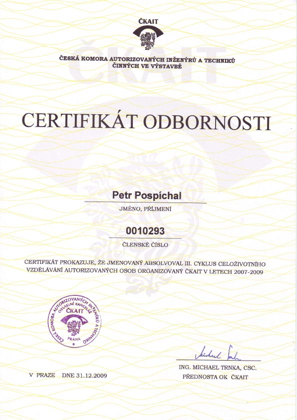
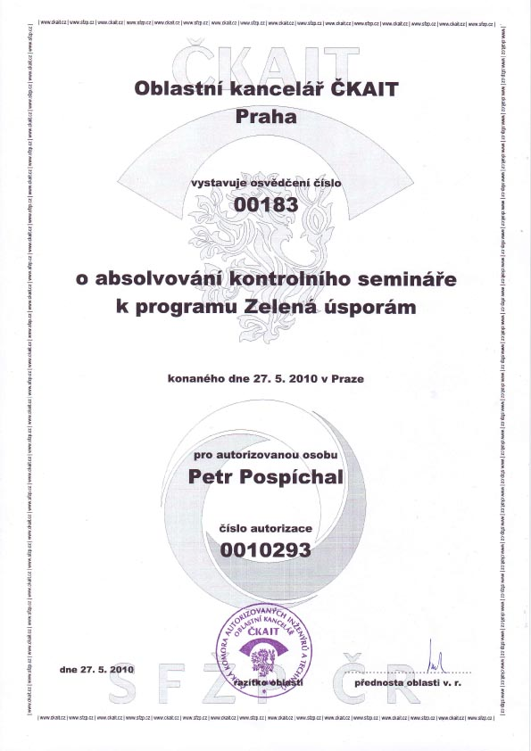
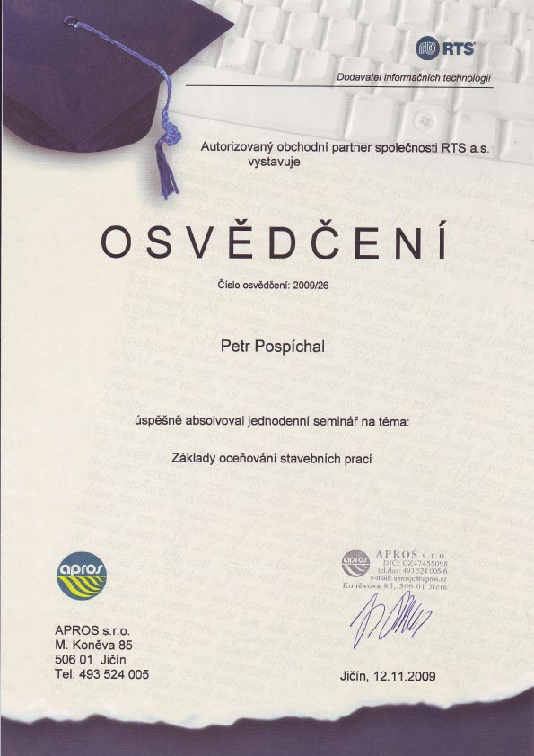
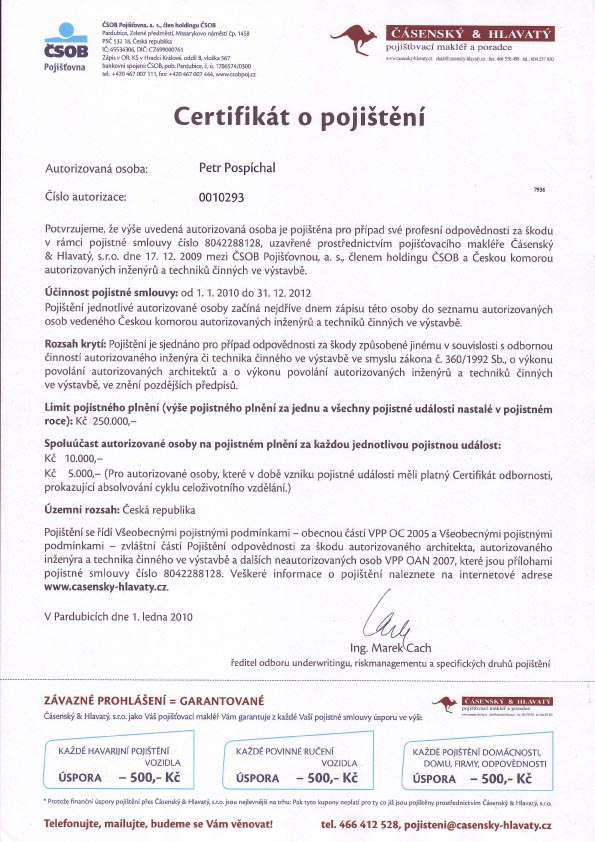
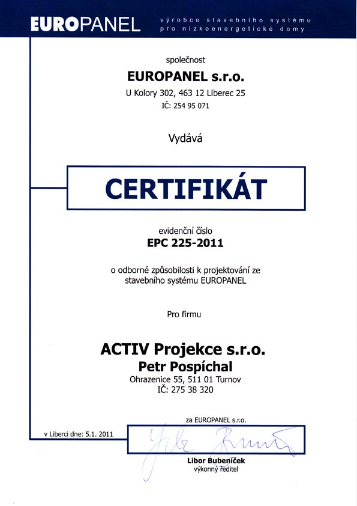

Kontakt
Petr Pospíchal
datum narození 28. 4. 1976
národnost česká
občanství české
Dosažené vzdělání:
- studijní obor Podnikání v oborech stavebnictví a vodohospodářství
- získání autorizace (autorizovaný technik) v oboru pozemní stavby vedený v seznamu ČKAIT pod číslem 0010293
- získání odborné zpusobilosti Koordinatora BOZP na staveništi dle Zak.č. 309/2006 Sb. reg.č. ITI/274/KOO/2012
Délka odborné praxe:
- práce v oboru od roku 1999
- odborná praxe v projekčních kancelářích
- práce v pozici projektant, vedoucí projektant, dozor investora, autorský dozor, vedení staveb, rozpočty




